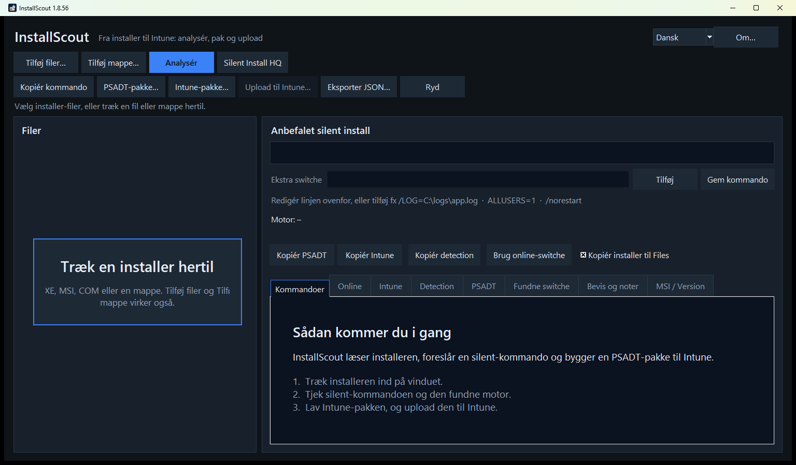
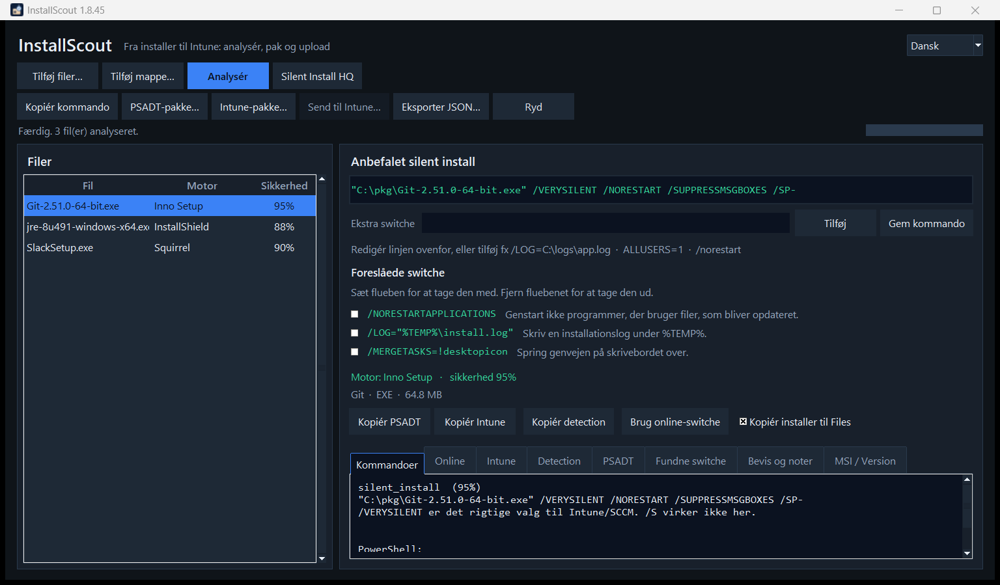
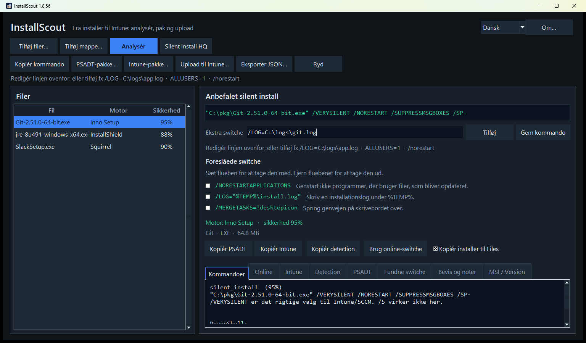
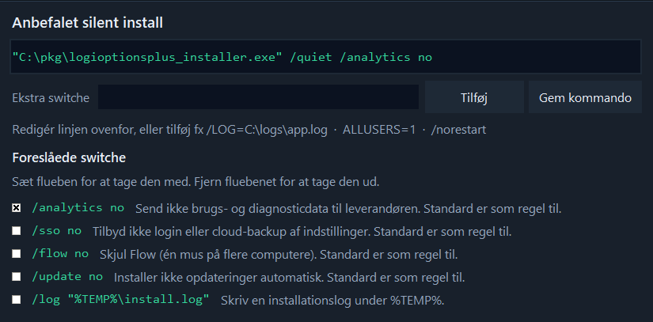
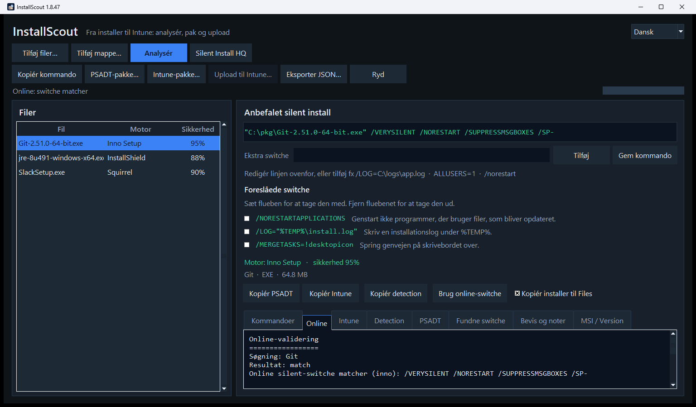
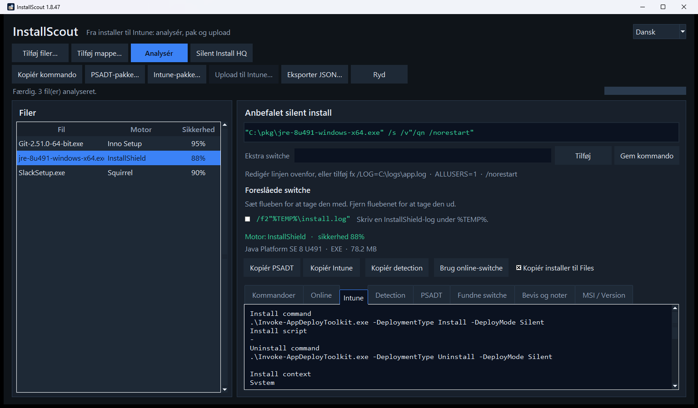
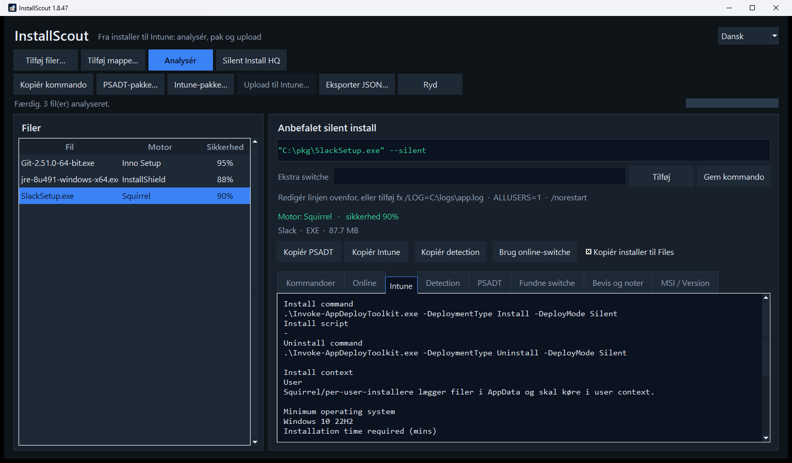
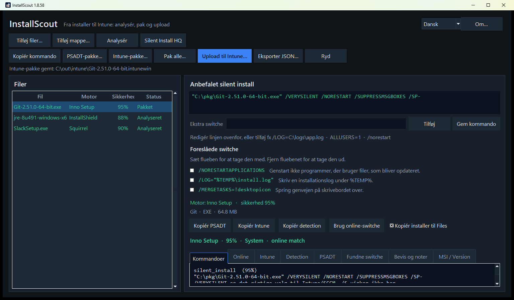
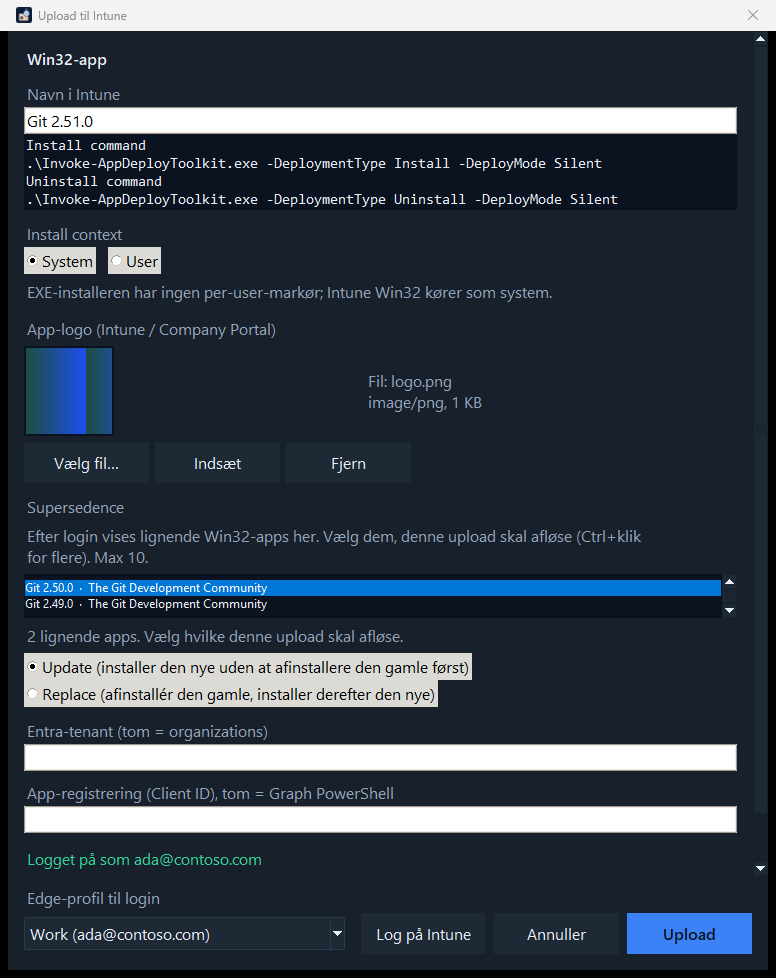
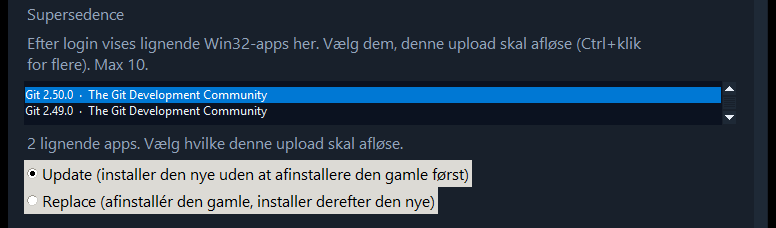

InstallScout – vejledning
InstallScout tager en Windows-installer hele vejen til Intune. Du giver det en EXE, MSI, COM eller MSIX. Det kører ikke installeren – det analyserer filen, lader dig rette silent-kommandoen, laver en lokal .intunewin og uploader Win32-appen med install, uninstall, detection og app-logo.
Silent-switche er ét trin. Målet er pakken i Intune.
Version 1.8.57. Quick start: quickstart.html. Teknisk reference: reference.html. PDF: InstallScout-vejledning.pdf. English: guide.html · InstallScout-guide.pdf.
| Fil | Motor | Typisk resultat |
|---|---|---|
Git-2.51.0-64-bit.exe | Inno Setup | Lokal og online enige om /VERYSILENT … · System · pakkes ikke ud |
jre-8u491-windows-x64.exe | InstallShield | Lokal /s /v"/qn" · online Java 8 /S · System |
AcroRdrDC….exe | Self Extractor | Ydre /sAll /rs /rps /msi /quiet · online Acrobat Reader · System |
SlackSetup.exe | Squirrel | Per-user · User |
1. Start og vindue
Dobbeltklik InstallScoutPortable.exe eller kør Start.bat. Programmet kræver ikke installation. Om… ved siden af sprogfeltet viser version, udvikler og links til GitHub.
Downloadet er ikke codesigned. Windows eller virksomhedens sikkerhed kan advare eller blokere det. Vælg Behold / Kør alligevel, bed IT om at tillade filen, eller prøv den i en VM eller Windows Sandbox uden de politikker.

Træk en installer ind på vinduet, eller brug Tilføj filer / Tilføj mappe. Den tomme start viser Træk en installer hertil i fillisten og en kort introduktion under fanen Kommandoer. EXE, MSI, COM og en hel mappe kan slippes.
Knapperne ligger på to rækker. Øverst: tilføj og Analysér. Nedenunder: kopiér, pakke og Upload til Intune. Sproget skiftes øverst til højre. Standard er English.
Venstre: filer, motor og sikkerhed (hvor sikker analysen er).
Højre: anbefalet silent-kommando (redigerbar), feltet Ekstra switche, plus fanerne Kommandoer, Online, Intune, Detection, PSADT, Fundne switche, Bevis og MSI/Version.
Under knapperne ligger status og progress på en egen linje, så de er synlige også når vinduet ikke er maksimeret.
| Knap | Funktion |
|---|---|
| Tilføj filer / mappe | Vælg EXE, MSI, COM, MSIX |
| Analysér | Lokal læsning af filen |
| Analysér | Læser filen lokalt og slår derefter op i WinGet og Chocolatey (kun navn/vendor) |
| Silent Install HQ | Åbner en navnesøgning i browseren – filen uploades ikke, kommandoen overskrives ikke |
| Kopiér kommando | Silent-linjen til udklipsholder |
| PSADT-pakke… | Mappe med PSADT 4.1.8 |
| Intune-pakke… | Lokal .intunewin + detection – skal laves før upload |
| Upload til Intune… | Log på og opret Win32-appen (logo, context, detection, supersedence) |
| Tilføj / Gem kommando | Manuelle extra switche eller gem den redigerede linje |
| Brug online-switche | Overskriv den lokale kommando med katalogets |
2. Arbejdsgang
- Tilføj installer → Analysér
- Analysér → Silent-kommando
- Silent-kommando → Intune-pakke
- Analysér → WinGet og Chocolatey
- WinGet og Chocolatey → Intune-pakke
- Analysér → System eller User
- System eller User → Intune-pakke
- Intune-pakke → Test i VM
- Test i VM → Upload til Intune
Hele forløbet slutter med upload. Silent-kommandoen er et mellemtrin.
- Tilføj filen og klik Analysér.
- Læs den grønne silent-kommando. Ret den, eller tilføj extra switche, og klik Gem kommando / Tilføj.
- Læs fanen Online, når den bliver udfyldt. En sikker lokal motor beholdes, hvis kataloget er uenigt. Et svagt lokalt gæt skiftes, når WinGet eller Chocolatey har et matchende produkt. Ved none: Silent Install HQ (kun navnesøgning).
- Åbn Intune og tjek Install context (System/User).
- Lav Intune-pakke (lokal
.intunewin). Test medInvoke-AppDeployToolkit.exe. - Upload til Intune – dialogen åbner, så navn, kommando, logo, afløsning og login er med fra start. Én Edge-profil vises; fold feltet ud for at vælge en anden. Log på Intune, Annuller og Upload står på samme række.
3. Lokal kontrol af switche
Lokal analyse kigger i binæren – markører, PE-sektioner, VersionInfo, MSI-egenskaber og tekst-switche i filen. Den vælger en motor (Inno, NSIS, InstallShield, MSI, Self Extractor, …) og bygger kommandoen ud fra den motors kendte silent-flag.
Indre setup (udpakning) sker lokalt og uden at køre installeren. Målet er silent-linjen (og filen i Files\) fra den payload, der faktisk installerer produktet.
| Situation | Hvad InstallScout gør |
|---|---|
| Wrapper: 7-Zip SFX, WinRAR SFX, IExpress, WiX Burn, InstallShield, Advanced Installer, Self Extractor | Leder efter ZIP, indlejret MSI, CAB og 7z (medfølgende 7za) |
| Ukendt motor eller meget lav sikkerhed | Samme billige udpakning (ZIP / MSI / CAB / 7z) |
| Rene motorer: Inno, NSIS, Squirrel, DDPM, Wacom, Chrome, Python, … | Pakker ikke ud – den ydre EXE har allerede den rigtige dialect |
Self Extractor med ydre silent-flag (/sAll, --silent, /silent) | Beholder den ydre kommando (typisk Adobe-stil /sAll /rs /rps /msi /quiet) |
| Self Extractor uden de flag | Bruger den indre setup, når den findes (ofte en MSI) |
Installeren køres aldrig for at pakke ud. Store vendor-SFX’er udtrækkes derfor ikke bare for at bekræfte et /sAll, der allerede står i filen.
Hvad du skal kigge efter
- Motor + sikkerhed – 75 %+ er typisk brugbart. Under ~40 % skal du læse bevis-fanen.
- Anbefalet silent install – den kommando, PSADT og Intune bruger.
- Fundne switche – rå flag, der faktisk står i filen.
- Bevis og noter – hvorfor motoren blev valgt, og faldgruber (fx at
/Sikke virker på Inno).
Eksempel: Git (Inno Setup)

Her er den lokale konklusion:
Motor: Inno Setup · sikkerhed 95 %
"C:\pkg\Git-2.51.0-64-bit.exe" /VERYSILENT /NORESTART /SUPPRESSMSGBOXES /SP-Inno bruger ikke /S. Det står i noterne. Kommandoer-fanen viser også PowerShell-varianten.
Eksempel: Java 8 (InstallShield + indlejret MSI)
Java Platform SE 8 detekteres som InstallShield. Silent-linjen bliver:
jre-8u491-windows-x64.exe /s /v"/qn"/s er InstallShield; /v"/qn" sendes videre til den indlejrede MSI. Det er den lokale, filbaserede sandhed – også selv om WinGet kalder produktet noget andet.
I PSADT-pakken startes en InstallShield-linje med anførselstegn via cmd /d /s /c, så /v"/qn" bevares. Pakken hæver sig selv, hvis den ikke allerede kører som administrator. Intune som SYSTEM er allerede administrator og springer det over.
Eksempel: vendor Self Extractor (Adobe og andre)
FileDescription / ProductName Self Extractor er en vendor-wrapper-klasse, ikke et produkt. Adobe, Lenovo og andre bruger samme etiket.
- Hvis
/sAlleller/rpsstår i filen, bliver linjen"fil.exe" /sAll /rs /rps /msi /quiet. - Hvis
--silenteller/silentstår i filen, bruges den dialect i stedet. - Hvis der ikke er et ydre silent-flag, udpakkes den indre MSI/EXE, og de switche bruges.
- UI kan stadig vise Adobe Self Extractor som motor-navn (fra VersionInfo). Produktet til Intune og online-søgning er det rigtige navn eller filstammen (
AcroRdrDC), ikke wrapper-etiketten.
Andre typiske lokale defaults
| Motor | Silent |
|---|---|
| MSI / WiX | msiexec /i fil.msi /qn |
| NSIS | /S (stort S) |
| Advanced Installer | /exenoui /qn |
| WiX Burn | /quiet |
| 7-Zip SFX / Wacom | /s |
| Self Extractor | /sAll … (uninstall /uninst) eller høstet --silent / /silent |
| DDPM | /Silent (ikke InstallShield /s /v"/qn") |
/install sættes ikke på. Det er allerede standardhandlingen for WiX Burn. /norestart sættes heller ikke på. Inno Setup beholder sin egen /NORESTART. Skriv /norestart under Ekstra switche, hvis en stille installation ikke må genstarte pc'en.
Manuelle switche
Den grønne linje er redigerbar. Under den ligger Ekstra switche, Tilføj og Gem kommando.

- Ret hele kommandoen og klik Gem kommando (eller Enter i linjen).
- Skriv kun de extra flag i Ekstra switche, fx
/LOG=C:\logs\app.logellerALLUSERS=1, og klik Tilføj. Stien til installeren røres ikke. - Foreslåede switche vises under feltet, når filen eller motoren har valgfrie flag. Hver linje har en kort beskrivelse. Sæt flueben for at tage switchen med i kommandoen, og fjern det for at tage den ud. Logi Options+
/analytics noog/sso noer eksempler på flag læst i installeren; Inno/LOGog MSIALLUSERS=1er eksempler, der følger motoren.

- Ændringer gemmes også, når du pakker, kopierer eller tjekker online.
- Hvis kommandoen ændres, skal Intune-pakken laves igen før upload (Upload til Intune bliver ellers grå, fordi den gamle
.intunewiner ugyldig).
4. Online kontrol af switche
Analysér slår produktet op i WinGet og Chocolatey, når det lokale resultat er vist:
- WinGet (winget.run +
winget.exepå maskinen) - Chocolatey Community
Silent Install HQ åbner en browsersøgning på produktnavnet på silentinstallhq.com. Installer-filen uploades ikke, og silent-kommandoen overskrives ikke. Brug den, når WinGet/Chocolatey er i conflict eller none – vendor-specifikke CLI’er ligger ofte der.
Der sendes kun produktnavn og vendor – ikke installer-filen.
Søgningen bruger både det lange produktnavn og katalognavne. Wrapper-etiketter strippes, så WinGet ikke slås op på Adobe Self Extractor. Kompakte filnavne udvides til navne, katalogerne faktisk indekserer:
| I filen | Online-søgning |
|---|---|
| Java Platform SE 8 U491 | Java 8 (Oracle.JavaRuntimeEnvironment) |
Adobe Self Extractor + AcroRdrDC….exe | Acrobat Reader |
GoogleChromeStandaloneEnterprise64.exe | Google Chrome |
npp.8.6.Installer.x64.exe | Notepad++ |
Fanen Online viser et resultat:
| Resultat | Betydning |
|---|---|
| match | Samme installer-familie (Inno, MSI, NSIS, …) |
| partial | Nogle flag overlapper |
| conflict | Anden familie – læs kilderne, test i VM |
| none | Ingen træffer (fx intern/unavngivet pakke) |
| error | Netværk eller kildefejl |
Eksempel: Git – lokal og online enige

Søgning: Git
Resultat: match
Online silent-switche matcher (inno): /VERYSILENT /NORESTART /SUPPRESSMSGBOXES /SP-
Lokale switche: /VERYSILENT /NORESTART /SUPPRESSMSGBOXES /SP-
winget.exe: Git.Git
Chocolatey: gitHer kan du trygt beholde den lokale kommando.
Eksempel: Java – kataloget er grovere end filen
Online finder Java 8 med /S. Lokalt er InstallShield /s /v"/qn". Begge kan være “stille nok”, men den lokale linje er mere præcis til denne Oracle-wrapper.
- Behold lokale switche, når de matcher motoren i filen.
- Brug Brug online-switche, hvis den lokale motor er usikker, og kataloget er tydeligt (som Git/Inno).
- Lav Intune-pakken igen, hvis du overskriver kommandoen.
Kataloger kan tage fejl (forkert udgave, OpenJDK i stedet for Oracle). Test altid i en VM.
5. User- vs system-context
Intune Win32 skal køre som system eller user. Forkert valg giver “installed” for den forkerte konto, manglende Program Files-filer eller detection der aldrig rammer.
InstallScout udleder context automatisk og viser den på Intune-fanen, i Intune.txt og i Upload til Intune-dialogen. Du kan overstyre ved upload.
- Analyse → Squirrel?
- Squirrel? — ja → User
- Analyse → Note: per-user?
- Note: per-user? — ja → User
- Analyse → ALLUSERS=0 eller AppData i args?
- ALLUSERS=0 eller AppData i args? — ja → User
- Analyse → ALLUSERS=1?
- ALLUSERS=1? — ja → System
- Analyse → MSI / InstallShield / Advanced Installer / WiX / Wacom / MSIX?
- MSI / InstallShield / Advanced Installer / WiX / Wacom / MSIX? — ja → System
- Analyse → Inno, NSIS, 7-Zip SFX uden per-user-markør
- Inno, NSIS, 7-Zip SFX uden per-user-markør → System
Stien til installeren under %LOCALAPPDATA%\Temp tæller ikke som user-context – kun argumenterne efter filstien.
Standard: System (maskininstallation)
De fleste virksomheds-Win32-pakker skal køre som system: MSI med ALLUSERS=1, InstallShield, Advanced Installer, Inno/NSIS uden per-user-flag.

Install context
System
InstallShield er typisk maskininstallation og kræver system context.
Minimum operating system Windows 10 22H2
Installation time required 60
Device restart behavior No specific actionSamme standardfelter bruges ved upload til Intune.
Undtagelsen: User (per-bruger)
Squirrel (Slack, flere Electron-apps), InstallAllUsers=0 / ALLUSERS=0, eller installation der eksplicit peger på AppData.

Install context
User
Squirrel/per-user-installere lægger filer i AppData og skal køre i user context.I Upload til Intune er System/User forhåndsvalgt, men du kan skifte, hvis du kender pakken bedre end automatikken.
Hvorfor det betyder noget
| Context | Typisk mål | Detection |
|---|---|---|
| System | C:\Program Files, HKLM Uninstall | Maskin-ARP / MSI ProductCode |
| User | %LOCALAPPDATA%, HKCU Uninstall | Brugerens Uninstall-nøgle – virker ikke, hvis appen kører som system |
6. Upload til Intune
Upload er et to-trins løb: først en lokal .intunewin, derefter Upload til Intune. Programmet uploader den pakke, du allerede har gemt – den pakker ikke forfra ved upload.
Analysér → Intune-pakke… (lokal .intunewin) → Upload til Intune… (Graph-upload)Det, der lander i Intune, er en Win32-app med:
- install- og uninstall-kommando (
Invoke-AppDeployToolkit.exe … Silent) - custom detection-script (
Detection.ps1, 64-bit PowerShell). Se Detection nedenfor. - Install context (System eller User – forhåndsudfyldt, kan overstyres)
- App-logo (
largeIconi Company Portal – fra EXE, fil eller udklipsholder) - Minimum OS Windows 10 22H2, 60 minutter, genstart No specific action
Trin 1 – lokal Intune-pakke
Intune-pakke… gemmer:
| Fil | Indhold |
|---|---|
*.intunewin | Krypteret Win32-indhold (samme format som Microsoft Win32 Content Prep) |
| PSADT-kilde | Invoke-AppDeployToolkit.exe + script + Files\ |
Intune.txt | Felter til portalen |
Detection.ps1 | Custom detection |
Detection
Intune regner appen som installeret, når Detection.ps1 afslutter med kode 0 og skriver en linje til STDOUT. Tomt output betyder ikke installeret. Scriptet kaster ikke en fejl. Samme regler gælder for alle leverandører.
| Det installeren har | Det der matches |
|---|---|
| Product code (MSI, eller en GUID i afinstallationskommandoen) | Den kode i afinstallationsregistret, og versionen |
| EXE uden product code | Visningsnavn, udgiver og version |
| MSIX | Pakkenavn, og versionen når den kendes |
- Navn. Afinstallationsnavnet må være produktet uden et efterstillet Installer, Setup, Bootstrapper eller Driver.
Logi Options+ InstallermatcherLogi Options+.Wacom Tablet DrivermatcherWacom Tablet. Nøglens navn tæller også. Et generisk restord som Advanced bruges ikke som navn. - Udgiver. Selskabsendelser ignoreres, så
Logitech, Inc.matcherLogitech, ogMicrosoft CorporationmatcherMicrosoft. - Version. Når installeren har en version, skal
DisplayVersionvære den samme eller nyere. Sammenligningen er numerisk. For en installer på2.7.961922tæller den version og2.8.1;2.6gør ikke.2.8.1er kun et eksempel på sammenligningen. En bindestregsrevision som6.4.14-1er også opfyldt af6.4.14. Hvis der ikke blev læst en version, kræves version ikke. En nøgle der hedder produktet, tæller stadig, når de felter aldrig blev skrevet. - Product code prøves først. Når den mangler, bruges navn, udgiver og version. Både maskinens og brugerens afinstallationsnøgler læses.
Indtil pakken findes for den valgte fil, er Upload til Intune grå. Når pakken er gemt, bliver knappen aktiv:

Test kilden før upload:
.\Invoke-AppDeployToolkit.exe -DeploymentType Install -DeployMode SilentTrin 2 – Upload til Intune
Klik Upload til Intune…. Dialogen tilpasser højden, så indholdet er synligt uden at scrolle. Nederst vises én Edge-profil. Fold feltet ud for at vælge en anden. Log på Intune, Annuller og Upload står på samme række.

Logo
- InstallScout prøver først at trække ikonet ud af EXE’en (og kigger efter
logo.png/icon.icoved siden af filen). - Vælg fil… – PNG, JPEG, ICO, GIF eller BMP.
- Indsæt (Ctrl+V) – billede eller fil fra udklipsholderen.
- Fjern – upload uden logo.
- MSI har ofte kun Windows’ standardikon; brug fil eller indsæt.
I dialogen
- Ret Navn i Intune, hvis det fundne navn ikke skal stå i Company Portal. Versionen bliver i Display version.
- Tjek install, uninstall og detection-opsummering.
- Bekræft Install context (System/User). Skift kun hvis du kender pakken bedre.
- Tjek app-logo (preview). Overstyr med fil eller indsæt, hvis automatikken rammer forkert.
- Tenant og Client ID kan stå tomme: da bruges organizations og Microsoft Graph PowerShell. InstallScout opretter ikke en Entra-app.
- Feltet Edge-profil til login viser den valgte profil. Arbejdsprofilen vælges, når den kan genkendes. Fold listen ud for at vælge en anden.
- Log på Intune – browser-login (PKCE, localhost) i den valgte Edge-profil. Device code bruges ikke, fordi Conditional Access ofte blokerer det.
- Efter login: vælg evt. supersedence (se nedenfor). Ingenting vælges automatisk.
- Upload – opretter appen, uploader
.intunewin, sætter detection, logo og evt. supersedence. Statuslinjen viser fremdrift.
Supersedence
I Upload til Intune kan den nye Win32-app afløse ældre versioner i tenant – samme funktion som Supersedence i Intune-portalen.
Vent til status er Logget på som …, ikke kun at Edge-profilen er åbnet. Først da slår InstallScout Win32-apps op. Søget bruger produktnavnet (startswith på displayName), ikke hele Win32-kataloget. Listen viser apps, der ligner navnet – fx Git 2.50.0 når du sender Git 2.51.0. Samme vendor med et andet produkt kommer typisk ikke med.

- Ingenting vælges automatisk. Markér med Ctrl+klik (højst 10 – Intunes grænse).
- Update (standard) – installer den nye uden at afinstallere den gamle først.
- Replace – afinstallér den gamle, installer derefter den nye.
- Relationerne skrives først, når den nye app er oprettet (Graph
updateRelationships). - Hvis supersedence fejler, bliver den nye app stående. Dialogen viser hvilke apps der blev superseded, eller fejlen. Du kan sætte relationen i portalen bagefter.
.\InstallScoutPortable.exe --cli .\setup.exe --intune C:\out\intune --publish-intune --supersede update
.\InstallScoutPortable.exe --cli .\setup.exe --intune C:\out\intune --publish-intune --supersede replace --supersede-id <app-guid>--supersede update|replace matcher på produktnavnet som i GUI. --supersede-id kan gentages, hvis du kender Intune-app-id’et.
Efter succes åbnes et link til appen i Intune-portalen.
Hvad Graph skriver på appen
| Felt | Værdi |
|---|---|
| App-type | Win32 (win32LobApp) |
| Install command | .\Invoke-AppDeployToolkit.exe -DeploymentType Install -DeployMode Silent |
| Uninstall command | .\Invoke-AppDeployToolkit.exe -DeploymentType Uninstall -DeployMode Silent |
| Detection | PowerShell-script, ikke 32-bit, uden signaturkrav |
| runAsAccount | system eller user |
| Minimum OS | Windows 10 22H2 |
| Max runtime | 60 minutter |
| Restart | No specific action (suppress) |
| Logo | largeIcon (PNG/JPEG fra EXE, fil eller udklipsholder) |
| Supersedence | Valgfrit: Update eller Replace mod op til 10 ældre Win32-apps |
PSADT-pakke uden Intune
PSADT-pakke… er den samme kilde uden .intunewin – nyttig til VM-test, før du pakker til Intune.
Kommandolinje-upload
.\InstallScoutPortable.exe --cli .\setup.exe --intune C:\out\intune --publish-intune --icon .\logo.png--publish-intune kræver --intune (lokal pakke først), ligesom i GUI. Uden --icon trækkes logoet fra EXE’en, hvis det findes.
Login og rettigheder
Login åbner i browseren med PKCE. Device code bruges ikke.
Windows DPAPI krypterer access-token og refresh-token for den aktuelle Windows-bruger i %LOCALAPPDATA%\InstallScout\graph.json. Den gemte session er bundet til den valgte tenant og det valgte Client ID. Et andet par genbruger den ikke. En tokenfil i klartekst fra en ældre version slettes og kan ikke bruges. Log af sletter filen.
- Windows 10 eller 11. Opslag af switche og en lokal pakke kræver ikke Azure.
- Microsoft Edge. Login åbner i en Edge-profil.
- En konto der kan oprette Win32-apps: Entra-rollen Intune Administrator, eller Intune-rollen Application Manager. En brugerdefineret rolle med de samme app-rettigheder dur også.
- Admin-consent i tenant for
DeviceManagementApps.ReadWrite.All. - Standard Client ID: Microsoft Graph PowerShell (
14d82eec-204b-4c2f-b7e8-296a70dab67e). InstallScout opretter ikke en app-registrering. - Conditional Access kan stadig blokere. IT kan oprette en public client med redirect
http://localhostog sætte Client ID i dialogen.
7. Kommandolinje
InstallScoutPortable.exe uden argumenter åbner GUI. Til scripts:
# Lokal analyse
.\InstallScoutPortable.exe --cli "C:\installers\Git-64-bit.exe"
# Lokal + online
.\InstallScoutPortable.exe --cli "C:\installers\jre-8u491-windows-x64.exe" --online
# Silent Install HQ (navnesøgning i browseren; uploader ikke filen)
.\InstallScoutPortable.exe --cli "C:\installers\DDPM-Setup.exe" --sihq
# JSON
.\InstallScoutPortable.exe --cli .\setup.exe --json --out .\analyse.json
# Extra switche
.\InstallScoutPortable.exe --cli .\setup.exe --switches "/LOG=C:\logs\app.log"
# Lokal Intune-pakke
.\InstallScoutPortable.exe --cli .\setup.exe --intune C:\out\intune
# Pakke + upload + logo (kræver --intune)
.\InstallScoutPortable.exe --cli .\setup.exe --intune C:\out\intune --publish-intune --icon .\logo.png
# Upload og supersede matchende Win32-apps
.\InstallScoutPortable.exe --cli .\setup.exe --intune C:\out\intune --publish-intune --supersede updateFra kilde: python -m installscout med de samme flag.
8. Understøttede motorer
MSI, Inno Setup, NSIS, InstallShield, WiX Burn, Advanced Installer, InstallAware, BitRock, Squirrel, Wise, install4j, Qt Installer, 7-Zip SFX, Wacom, WinRAR SFX, IExpress, Self Extractor, DDPM, MSIX/AppX, ClickOnce.
Ukendt motor: kig i Fundne switche og Bevis. Analysér spørger også WinGet og Chocolatey og bruger det hit, når det lokale gæt er svagt. Wrappers og ukendte EXE’er udpakkes lokalt først, så en indre MSI kan erstatte Unknown 15 %.
9. Grænser
- Om… tjekker GitHub for en nyere udgivelse. Knappen viser Om · Opdatering i rav, når der findes én. Download opdatering åbner den nyeste udgivelse.
- Downloadet er ikke codesigned. Windows eller virksomhedens sikkerhed kan advare eller blokere det. Vælg Behold / Kør alligevel, bed IT om at tillade filen, eller prøv den i en VM eller Windows Sandbox uden de politikker.
- Programmet installerer ikke noget. Udpakning kører aldrig installeren. Test silent-linjen i en VM.
- En medfølgende 7-Zip Extra
7zabruges til indre 7z-payloads, så system-7-Zip ikke er påkrævet. - Online-kataloger kender ofte et andet navn eller en nyere build end din fil. Wrapper-VersionInfo (Self Extractor) er ikke et katalogprodukt.
- Context er et kvalificeret gæt. Overstyr i Upload til Intune, hvis du ved bedre.
- Intune-upload kræver Graph-rettighed og kan ramme Conditional Access.
- Binære installere sendes ikke på nettet ved online-tjek.
- Upload til Intune er inaktiv, indtil der findes en lokal
.intunewinfor den valgte fil. - MSI har ofte intet brugbart ikon. Brug Vælg fil… eller Indsæt.
- Manuelle switche overskriver den anbefalede linje i PSADT; test i en VM.
- Supersedence-listen vises først, når login er færdig (Logget på som …).
- Hvis supersedence fejler, ligger den nye Win32-app stadig i Intune.